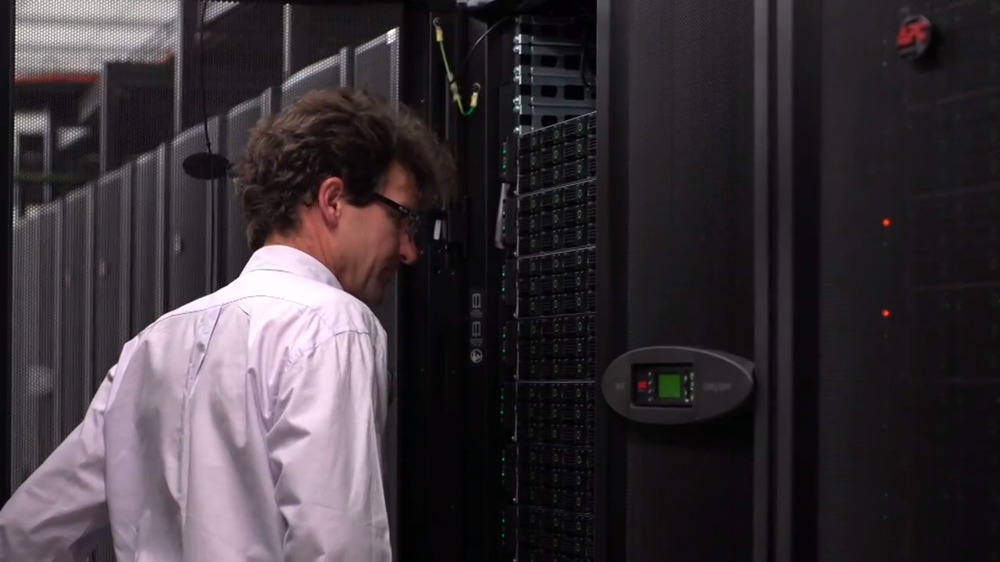

Payu
A climate model workflow manager
Marshall Ward and Aidan Heerdegen
25th May 2021
What is Payu?
Payu is a climate model workflow manager
It is open source, the code is available on GitHub
https://github.com/payu-org/payu
and there is full documentation
What is a climate model workflow manager?
That means it runs your model for you. In short:
- Setup model run directory (
work) - Run the model
- Move outputs/restarts to
archivedirectory - Clean up the run directory
- Run again (if instructed to do so)
Features
- Simple YAML based configuration
- Full automatic version control of experimental configuration using
git - Hash based versioning of all model inputs and executables
- Supports many models: MOM5, MOM6, ACCESS-OM, ACCESS-ESM, MITgcm, CICE4, CICE5, Qgcm ...
- Driver based architecture allows support for other models to be added
Etymology
Python on vAYU
Vayu was Gadi's two times antecedent and though it has passed away...
...Payu lives on!
Motivation
Long ago, we managed many, many jobscripts.
- Many kinds of scripts:
bash, tcsh, ksh, ...
- Many different models:
MOM, MITgcm, Q-GCM, ACCESS, ...
Juggling and sharing scripts was becoming a problem. Many of steps were duplicated between different scripts for the various models. Payu is an attempt to generalise the task of running a model.

"Why not just do everything in Python?"
Prehistoric Payu
from payu import gold
def main():
expt = gold(forcing='andrew')
expt.setup()
expt.run()
expt.archive()
if expt.counter < expt.max_counter:
expt.resubmit()
if __name__ == '__main__':
main()Using Payu
Load the CMS conda environment containing payu:
module use /g/data3/hh5/public/modules
module load condaRunning payu
payu has multiple subcommands. Invoking with the -h option will print help usage message
$ payu -h
usage: payu [-h] [--version] {archive,build,collate,ghsetup,init,list,profile,push,run,setup,sweep} ...
positional arguments:
{archive,build,collate,ghsetup,init,list,profile,push,run,setup,sweep}
optional arguments:
-h, --help show this help message and exit
--version show program's version number and exitSubcommands
Often used subcommands
| init | Initialise laboratory directories |
| setup | Initialise work directory |
| sweep | Remove ephemeral work directory and copy logs to archive |
| run | Submit model to queue to run |
| collate | Join tiled outputs (and potentially restarts). Not all models |
Less used subcommands
| archive | Clean up work directory and copy files to archive |
| ghsetup | Setup GitHub repository |
| push | Push local repo to GitHub |
Never typically used:
| profile | Profile model (not typically used) |
| build | Build model executable (not currently supported) |
Pass -h to subcommands for subcommand specific help and options
$ payu run -h
usage: payu run [-h] [--model MODEL_TYPE] [--config CONFIG_PATH] [--initial INIT_RUN] [--nruns N_RUNS] [--laboratory LAB_PATH] [--reproduce] [--force]
Run the model experiment
optional arguments:
-h, --help show this help message and exit
--model MODEL_TYPE, -m MODEL_TYPE
Model type
--config CONFIG_PATH, -c CONFIG_PATH
Configuration file path
--initial INIT_RUN, -i INIT_RUN
Starting run counter
--nruns N_RUNS, -n N_RUNS
Number of successive experiments ro run
--laboratory LAB_PATH, --lab LAB_PATH, -l LAB_PATH
The laboratory, this will over-ride the value given in config.yaml
--reproduce, --repro, -r
Only run if manifests are correct
--force, -f Force run to proceed, overwriting existing directoriesCloning an experiment
- The payu configuration file,
config.yamland the model configuration files are tracked directly bygit - When an experiment is cloned only the files tracked by
gitare copied - Other files can be added and changes to those files will be automatically added to the experiment repo
Clone an existing experiment (usually in a subdirectory in $HOME):
cd $HOME
mkdir -p payu/mom
cd payu/mom
git clone https://github.com/payu-org/bowl1.git
cd bowl1This is the "control directory" for bowl1
Your experiment
- The newly cloned experiment consists of the
config.yaml, the config files for this model (MOM) and, optionally, file manifests
bowl1/
├── config.yaml
├── data_table
├── diag_table
├── field_table
├── input.nml
└── manifests
├── exe.yaml
├── input.yaml
└── restart.yamlExperiment Configuration
# PBS
queue: express
ncpus: 4
walltime: 0:10:00
mem: 1GB
jobname: bowl1
# Model
model: mom
input: /g/data/hh5/tmp/mom-test/input/bowl1
exe: /g/data/hh5/tmp/mom-test/bin/mom51_solo_default
# Config
collate: FalseRun the experiment
This job is pre-configured, so can just run it!
cd bowl1
payu run- Model will run in
work/(an ephemeral directory created in the laboratory just for that model run) - Output saved to
archive/
Inspecting the output
mom.out |
Model output |
mom.err |
Model error |
bowl1.o${jobid} |
PBS (payu) output |
bowl1.e${jobid} |
PBS (payu) error |
archive/output000 |
Model output files |
archive/restart000 |
Restart (pickup) files |
manifests |
Manifest files for tracking executables and inputs |
Cleaning up
To clear work/ and save PBS logs:
payu sweepOr to completely delete the experiment:
payu sweep --hardThis wipes output, restarts, and logs! (archive/$expt)
Anatomy of an Experiment
Control vs Laboratory
- Control path:
${HOME}/mom/bowl1 User-configured (text) input
- Laboratory:
/scratch/$PROJECT/$USER/$MODEL/ Executables, data input, output, etc.
You "control" the laboratory externally
Laboratory overview
archive |
Experiment output and restarts |
bin |
Model executables |
codebase |
Model Source code repository |
input |
Static input files |
work |
Ongoing (or failed) experiments |
"payu init -m mom" will create these directories
Configuring your experiment
| Config | Description | Default |
|---|---|---|
model |
Model type | (required!) |
name |
Experiment name | Expt directory |
exe |
Executable | Set by driver |
input |
Model inputs | - |
Paths can be absolute or relative to the lab path
Scheduler configuration
| Config | Description | Default |
|---|---|---|
queue |
PBS Queue | normal |
project |
SU Account | $PROJECT |
jobname |
Queue job name | name |
walltime |
Time request | (From PBS) |
ncpus |
CPU request | 1 |
mem |
RAM request | Max node mem |
qsub_flags for everything else
CPU requests
Normally ncpus will increase itself to match the node, but more control is available:
| Config | Description | Default |
| platform | ||
| →nodesize | Node CPUs | 48 |
| →nodemem | Node RAM | 192 (GB) |
This is currently required to use the Broadwell nodes:
platform:
nodesize: 28
nodemem: 128The work directory
Run the following to inspect (and test) the setup of your run:
payu setupThis will create your work directory in the laboratory and a symbolic link to it in your control directory.
Inside the work directory
Inspect the symbolic link to work and its contents:
work
├── config.yaml
├── data_table
├── diag_table
├── field_table
├── INPUT
│ ├── gotmturb.inp -> /g/data/hh5/tmp/mom-test/input/bowl1/gotmturb.inp
│ ├── grid_spec.nc -> /g/data/hh5/tmp/mom-test/input/bowl1/grid_spec.nc
│ ├── ocean_barotropic.res.nc -> /scratch/w97/aph502/mom/archive/bowl1/restart000/ocean_barotropic.res.nc
│ ├── ocean_bih_friction.res.nc -> /scratch/w97/aph502/mom/archive/bowl1/restart000/ocean_bih_friction.res.nc
│ ├── ocean_density.res.nc -> /scratch/w97/aph502/mom/archive/bowl1/restart000/ocean_density.res.nc
│ ├── ocean_pot_temp.res.nc -> /scratch/w97/aph502/mom/archive/bowl1/restart000/ocean_pot_temp.res.nc
│ ├── ocean_sbc.res.nc -> /scratch/w97/aph502/mom/archive/bowl1/restart000/ocean_sbc.res.nc
│ ├── ocean_solo.res -> /scratch/w97/aph502/mom/archive/bowl1/restart000/ocean_solo.res
│ ├── ocean_temp_salt.res.nc -> /scratch/w97/aph502/mom/archive/bowl1/restart000/ocean_temp_salt.res.nc
│ ├── ocean_thickness.res.nc -> /scratch/w97/aph502/mom/archive/bowl1/restart000/ocean_thickness.res.nc
│ ├── ocean_tracer.res -> /scratch/w97/aph502/mom/archive/bowl1/restart000/ocean_tracer.res
│ ├── ocean_velocity_advection.res.nc -> /scratch/w97/aph502/mom/archive/bowl1/restart000/ocean_velocity_advection.res.nc
│ └── ocean_velocity.res.nc -> /scratch/w97/aph502/mom/archive/bowl1/restart000/ocean_velocity.res.nc
├── input.nml
├── log
├── manifests
│ ├── exe.yaml
│ ├── input.yaml
│ └── restart.yaml
├── mom51_solo_default -> /g/data/hh5/tmp/mom-test/bin/mom51_solo_default
└── RESTARTYour config files are copied, and sometimes modified. Your input data is symlinked.
A simple configuration
The configuration file (config.yaml) uses the YAML format
model: mom6
name: om4_gm_test
queue: normal
jobname: mom6_om4
walltime: 20:00
ncpus: 960
mem: 1500GB
exe: mom6_intel17
input:
- om4_grid
- om4_atmMost variables have "sensible" defaults
A more complex configuration
# PBS configuration
queue: normal
project: fp0
walltime: 02:30:00
jobname: om2_jra55
ncpus: 1153
mem: 2000GB
#platform:
# nodesize: 28
laboratory: /scratch/fp0/mxw900/cosima
repeat: True
collate:
walltime: 4:00:00
mem: 30GB
ncpus: 4
queue: express
flags: -n4 -z -m -r
# Model configuration
model: access
submodels:
- name: coupler
model: oasis
input: oasis_025
ncpus: 0
- name: atmosphere
model: matm
exe: matm
#input: jra55-0.8_025
input: /scratch/v45/mxw900/cosima/nc64
ncpus: 1
- name: ocean
model: mom
exe: mom
input:
- mom
# - iaf-sw21d
ncpus: 960
- name: ice
model: cice
exe: cice_nohalo
input: cice
ncpus: 192
calendar:
runtime:
years: 0
months: 0
days: 30
start:
year: 1
month: 1
days: 1Feature overview
Multiple runs
To do multiple runs in sequence:
payu run -n 20We save every output, and every 5th restart.
To change the rate restart files are saved:
restart_freq: 1To run the model multiple times for each submission to the queue:
runspersub: 5will run the model 5 times during each queued job. Can help reduce overhead spent waiting in queue
Path control
Default paths can be set explicitly
shortpath |
Root ("scratch") path |
laboratory |
Laboratory path |
control |
Control path |
e.g. to run under multiple project codes but keep all files in the same laboratory location specify shortpath
MPI support
MPI support is very explicit at the moment:
mpi:
module: openmpi/2.1.1-debug
modulepath: /home/157/mxw157/modules
flags:
- -mca orte_output_filename log
- -mca pml yalla
runcmd: map --profile mpiexecIt is not recommended to change these without understanding and good reason
Userscript support
Subcommands and scripts can be injected after key steps
userscripts:
init: 'echo "some_data" > input.nml'
setup: patch_inputs.py
run: 'qsub postprocess.sh'
postscript: sync_output_to_gdata.shThese will run after the prescribed section. postscript runs when a run finishes, if the output is collated it runs after that completes.
Supported models
To see the supported models:
payu listBut expect some atrophy...
File Tracking
- Track input files used for each model run
- Completely automatic. User intervention not required
- Reproducibly re-run previous experiment
- Share experiments more easily as input files all specified
- Flexibility with specifying path to input files
- Identify all runs using specified file (possible future feature)
What is tracked?
| Executables | manifests/exe.yaml |
| Inputs | manifests/inputs.yaml |
| Restarts | manifests/restarts.yaml |
How is it tracked?
- Uses yamanifest
- Creates a manifest file which uses
YAMLformat - Each file (symlink) in
workis a dictionary key in manifest file - Manifests files are tracked by
git, so the unique hash for every tracked file is associated with each run using version control
Example
fullpathis the actual location of the file- The hashes uniquely identify file
format: yamanifest
version: 1.0
---
work/mom51_solo_default:
fullpath: /g/data/hh5/tmp/mom-test/bin/mom51_solo_default
hashes:
binhash: 423d9cf92c887fe3145c727c4fbda4d0
md5: 989580773079ede1109b292c2bb2ad17Hierachy of hashes
- yamanifest supports multiple hashes => hierarchy of hashes
- Unique hashes (md5, sha128) take too long on large files
- Fast hashing to check for file changes
- Use unique hash check when necessary
- Running
payu setupfor experiments with large number and size of input files can be useful: precalculate expensive hashes saves time when job runs on queue
Forking and sharing experiments
Creating a new experiment
Let's have some FUN and increase the timestep:
git clone bowl1 bowl2
cd bowl2We are in a hurry, so let's make dt_ocean in input.nml very large:
&ocean_model_nml
dt_ocean = 86400Recording your progress
See changes to the run by utilising git:
git logand responsible people always document their changes:
git commit -am "Testing a large timestep"But if you're lazy then payu will commit upon completion.
Let's run it!
FAILURE

Your run crashed!!!
Inspecting failed jobs
Failed jobs retain output and error files (mom.out, mom.err in this case), and a work/ directory
From mom.err:
FATAL from PE 2: ==>Error: time step instability detected for baroclinic gravity waves in ocean_model_mod
forrtl: error (78): process killed (SIGTERM)Errors are saved to archive/error_logs with PBS job IDs
(Note: Error logs can get big fast!)
GitHub integration
You can sync your experiment on GitHub:
payu ghsetup
payu pushVisit your experiment in GitHub!
NOTE: This will create SSH keys in your $HOME/.ssh directory.
Other GitHub features
You should set a description for your run:
description: A very fun experimentYou can also save jobs to an organization:
runlog:
organization: mxw900-raijinThere are a few other features here, and someday they may be documented!
Currently "payu push" is manual, but we could make it automatic.
Coupled Models
Coupled configuration
Yes, Payu supports coupled models!
https://github.com/COSIMA/01deg_jra55_iaf
model: access-om2
input: /g/data/ik11/inputs/access-om2/input_08022019/common_01deg_jra55
submodels:
- name: atmosphere
model: yatm
exe: /g/data/ik11/inputs/access-om2/bin/yatm_4198e150.exe
input:
- /g/data/ik11/inputs/access-om2/input_08022019/yatm_01deg
- /g/data/qv56/replicas/input4MIPs/CMIP6/OMIP/MRI/MRI-JRA55-do-1-4-0/atmos/3hr/rsds/gr/v20190429
- /g/data/qv56/replicas/input4MIPs/CMIP6/OMIP/MRI/MRI-JRA55-do-1-4-0/atmos/3hr/rlds/gr/v20190429
- /g/data/qv56/replicas/input4MIPs/CMIP6/OMIP/MRI/MRI-JRA55-do-1-4-0/atmos/3hr/prra/gr/v20190429
- /g/data/qv56/replicas/input4MIPs/CMIP6/OMIP/MRI/MRI-JRA55-do-1-4-0/atmos/3hr/prsn/gr/v20190429
- /g/data/qv56/replicas/input4MIPs/CMIP6/OMIP/MRI/MRI-JRA55-do-1-4-0/atmos/3hrPt/psl/gr/v20190429
- /g/data/qv56/replicas/input4MIPs/CMIP6/OMIP/MRI/MRI-JRA55-do-1-4-0/land/day/friver/gr/v20190429
- /g/data/qv56/replicas/input4MIPs/CMIP6/OMIP/MRI/MRI-JRA55-do-1-4-0/atmos/3hrPt/tas/gr/v20190429
- /g/data/qv56/replicas/input4MIPs/CMIP6/OMIP/MRI/MRI-JRA55-do-1-4-0/atmos/3hrPt/huss/gr/v20190429
- /g/data/qv56/replicas/input4MIPs/CMIP6/OMIP/MRI/MRI-JRA55-do-1-4-0/atmos/3hrPt/uas/gr/v20190429
- /g/data/qv56/replicas/input4MIPs/CMIP6/OMIP/MRI/MRI-JRA55-do-1-4-0/atmos/3hrPt/vas/gr/v20190429
- /g/data/qv56/replicas/input4MIPs/CMIP6/OMIP/MRI/MRI-JRA55-do-1-4-0/landIce/day/licalvf/gr/v20190429
ncpus: 1
- name: ocean
model: mom
exe: /g/data/ik11/inputs/access-om2/bin/fms_ACCESS-OM_e837d05d_libaccessom2_4198e150.x
input: /g/data/ik11/inputs/access-om2/input_08022019/mom_01deg
ncpus: 4358
- name: ice
model: cice5
exe: /g/data/ik11/inputs/access-om2/bin/cice_auscom_3600x2700_722p_597e4561_libaccessom2_4198e150.exe
input: /g/data/ik11/inputs/access-om2/input_20200422/cice_01deg
ncpus: 799Layout of a coupled model
Inputs, work and output are separated by the name:
libom2_1deg
|-- accessom2.nml
|-- archive -> /scratch/fp0/mxw900/access-om2/archive/libom2_1deg
|-- atmosphere
| |-- atm.nml
| |-- checksums.txt
| `-- forcing.json
|-- config.yaml
|-- ice
| |-- cice_in.nml
| |-- input_ice.nml
| |-- input_ice_gfdl.nml
| `-- input_ice_monin.nml
|-- namcouple
|-- ocean
| |-- checksums.txt
| |-- data_table
| |-- diag_table
| |-- field_table
| `-- input.nml
|-- sync_output_to_gdata.sh
`-- sync_restarts_to_gdata.shCommon files (accessom2.nml, namcouple) are in the top directory.
Work directories have a similar structure.
Troubleshooting
Model crashes
If you see this error in your PBS log:
payu: Model exited with error code 134; aborting."then it means the model crashed and payu has halted execution.
Check your error logs to figure out the problem.
Various Python errors
Sometimes a missing file or misconfigured experiment will cause an error in Python:
Traceback (most recent call last):
File "/home/157/mxw157/python/payu/bin/payu", line 8, in <module>
cli.parse()
File "/home/157/mxw157/python/payu/payu/cli.py", line 61, in parse
run_cmd(**args)
File "/home/157/mxw157/python/payu/payu/subcommands/setup_cmd.py", line 18, in runcmd
expt.setup(force_archive=force_archive)
File "/home/157/mxw157/python/payu/payu/experiment.py", line 353, in setup
model.setup()
File "/home/157/mxw157/python/payu/payu/models/mom.py", line 69, in setup
super(Mom, self).setup()
File "/home/157/mxw157/python/payu/payu/models/model.py", line 151, in setup
shutil.copy(f_path, self.work_path)
File "/apps/python/2.7.6/lib/python2.7/shutil.py", line 119, in copy
copyfile(src, dst)
File "/apps/python/2.7.6/lib/python2.7/shutil.py", line 82, in copyfile
with open(src, 'rb') as fsrc:
IOError: [Errno 2] No such file or directory: '/home/157/mxw157/mom/course/bowl2_course/input.nml'Run payu setup and test that the experiment is set up properly.
Cloning issues
Many config.yaml contain relative paths for inputs and executables, which can make sharing difficult!
Either copy (or symlink) their files into your local lab, or modify your config.yaml to use absolute paths.
On the developer end, we are thinking of better solutions here...
Summary
What does Payu do?
- Common interface for many models
- Manages your inputs, executables, outputs, and restarts
- Tracks changes to your experiment
- Provides hooks to configure and control your job
- Enables sharing of configurations and inputs
Special Thanks
Paul Spence suffered through the earliest version of Payu, and helped mold it into a usable application.
Nic Hannah and Aidan Heerdegen have been top-level contributors and maintainers for a very long time.
Thank you!!
Future works
Work only stops when people stop asking for features.
Questions?
What would you like to see?
Even better, contribute!